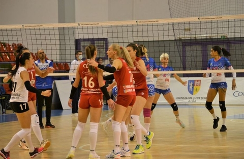
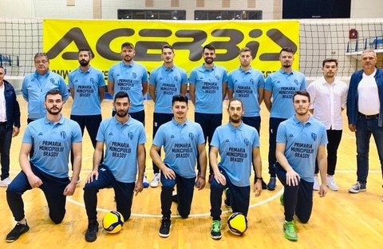

Volei Alba Blaj s-a calificat în semifinalele Challenge Cup!

Campioana României, Volei Alba Blaj, le-a învins în turneul de la Sibiu pe Sanaya Libby`s La Laguna (Spania) și pe VK Prostějov (Cehia) cu același scor, 3-0.
Deși era calificată în faza grupelor Ligii Campionilor, Volei Alba Blaj a refuzat participarea în cea mai importantă competiție intercluburi din cauza pandemiei de coronavirus.
Echipa din inima Ardealului s-a înscris în Challenge Cup și a a devenit principala favorită la câștigarea trofeului. Blajul a eliminat printr-o dublă victorie cu 3-0, în șaisprezecimi, echipa elvețiană VBC Cheseaux. Confederația Europeană de Volei (CEV) a stabilit ca partidele din optimi și sferturi să se dispute în sistem turneu. Blajul a preluat organizarea la Sibiu.
Echipa lui Darko Zakoc a întâlnit miercuri seara pe Sanaya Libby`s La Laguna. Meciul s-a închiat în doar o oră și patru minute într-o partidă dominată clar de românce. Blajul s-a impus cu 3-0 (19, 10, 22). Principalele realizatoare au fost Jovana Kocici 14 puncte, alături de Ioana Baciu, Maja Aleksici și Bojana Milenkovici cu câte 12 fiecare.
În celălalt meci, VK Prostějov a câștigat prin neprezentare disputa cu portughezele de la AJM FC do Porto. Joi seara, în ”sferturi”, Volei Alba Blaj a câștigat clar și întâlnirea cu echipa cehă. A fost 3-0 (14, 14, 6) în doar 54 de minute. În semifinale, Blajul va întâlni, cel mai probabil, echipa maghiară Diamant Kaposvar.
CSM Lugoj e și ea calificată în ”optimi”, în aceeași competiție. Timișorencele vor juca pe 16 decembrie cu Turkish Airlines Istanbul, dar în Spania, la Las Palmas.
Brașovul, din nou pe prima scenă a voleiului masculin românesc! Cum arată proiectul: „Toți lucrează ziua, iar seara vin la antrenament”

Brașovul va fi reprezentat în prima ligă a voleiului masculin românesc, după o lungă pauză. Începând cu sezonul 2020-2021, Clubul Sportiv Universitar va evolua în Divizia A.
În această vară, după un campionat întrerupt de pandemia de coronavirus, care a adus apoi noi probleme de ordin financiar în sport, Federația Română de Volei a anunțat echipele din Divizia B că mai există un loc în primul eșalon, oficialii CSU Brașov acceptând invitația.
Brașovul are echipă în prima ligă de volei
„Suntem o echipă de amatori, toți băieții lucrează ziua iar seara vin la antrenamente. Vreau să spun că acești băieți merită toată admirația pentru efortul pe care îl fac! Obiectivul pe care ni l-am propus este menținerea în prima divizie. Știm că ne va fi greu, dar sperăm, prin implicarea unor sponsori sau a autorităților locale, să putem face face câteva transferuri pentru a ne îndeplini obiectivul.
șsteptam decizia finală a FR Volei cu privire la start. Așteptam cât mai mulți oameni de sport să vină alături și să susțină această echipă de volei, deoarece acest sport este unul de tradiție în Brașov și ar fi păcat acum când a revenit după 16 ani, să nu avem continuitate și să îl ducem acolo unde altădată ne băteam de la egal la egal cu marile forțe din țară. Probabil suntem una dintre cele mai vechi echipe ale Brașovului, ar fi păcat să ne zbatem în zadar în acest sezon”, a declarat Iulian Stoian, manager al echipei.